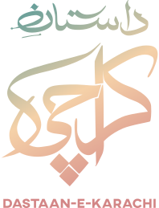
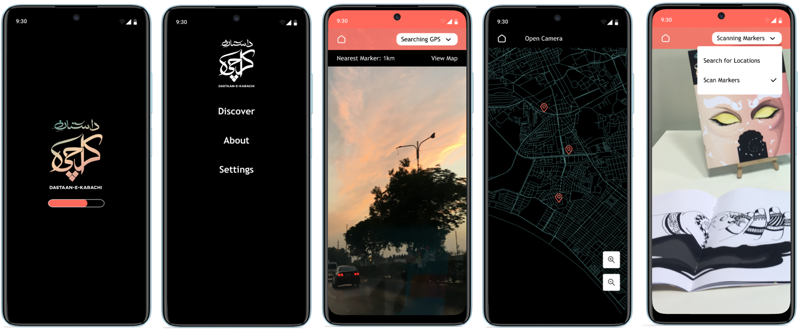
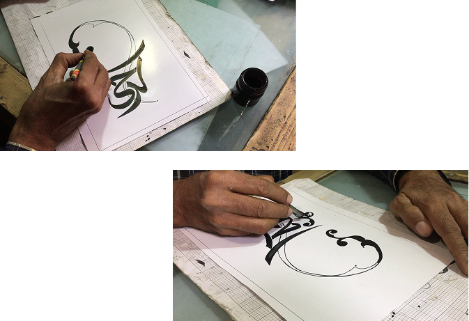
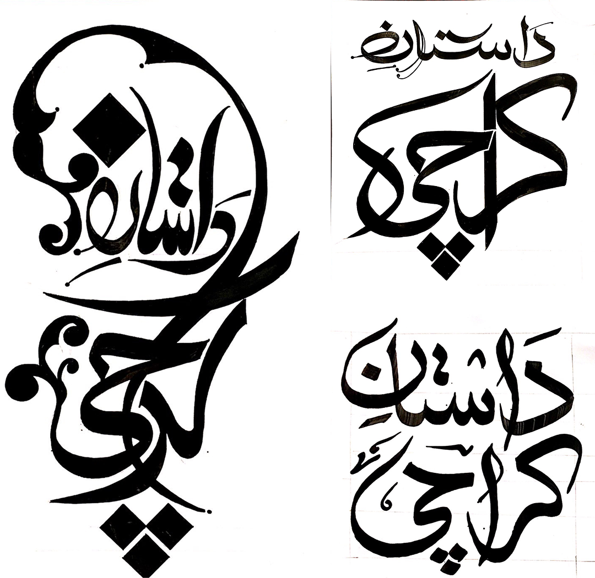

Dastaan-e-Karachi
*This project won best thesis award at Habib University in 2018.
Company:
-
Role:
-
Year:
2018
Team:
Fatin Nawaz

An AR platform that tackles the problem of Karachi’s fast fading intangible heritage.
Making Folklore Novel & Accessible
Using marker based and location based AR the app allows users to explore and interact with the cultural heritage of Karachi in a new way.

Karsaz Bride Marker
Zines and Markers
To enable marker-based AR unique markers were designed and compiled in a zine.

Selected Stories & Locations
1. The Ghost Bride of Karsaz Bride
2. Abdullah Shah Ghazi Shrine
3. Moriro and the Mach
4. Ram in Aram Bagh
5. The shrine and crocodiles of Mangopir

Interface Design

Identity Design

Calligraphic process

Calligraphy samples for the logo
Technical Development
Unity Engine
Building the interface and loading animations
Vuforia
A plugin to Integrate augmented reality functionality